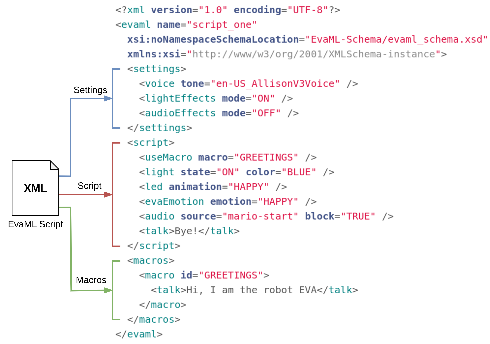

EvaML - Document Sections¶
We can see in Figure 2.1 an EvaML script that shows the document root element <evaml>, with its name
attribute that defines the script name, and which contains the following three elements: the <settings>, <script>
and <macros>.

Table 2.1 shows the root element of the EvaML document (<evaml>) and the elements <settings>, <script> and <macros> that represent the sections of the document. You can also observe the attributes of each element and its contents. In the attribute column, an underlined attribute indicates that it should be used. In the column of contents, occurrence indicators are used to indicate the order and number of times an element can occur. The "," (comma) symbol indicates that all child elements listed must be used in the sequence shown. The "|" (pipe bar) indicates that either element can occur within the parent element. The "+" (plus sign) symbol, on the other hand, indicates that the child element must appear one or more times. The "*" (asterisk) symbol indicates that the element may be used zero or more times within the parent element. The "?" (question mark) indicates that the element is optional, the element may not exist or there is only one occurrence of it.
| Element | Attributes | Content |
|---|---|---|
| evaml | name | (settings, script, macros?) |
| settings | (voice | lightEffects? | audioEffects?) | |
| script | (random* | wait* | talk* | stop* | light* | goto* | motion* | loop* | userEmotion* | evaEmotion* | useMacro* | listen* | audio* | led* | counter* | switch*) | |
| macros | (macro+) |
Table: EvaML - Document Elements (Root and Main Elements)
Settings Section¶
In this first section, some global characteristics of the script are defined in the <settings> element. It is
possible to define how the voice tone and the language in which the robot will communicate. It is also possible
to define whether the generated code will perform light effects, sound effects or even play music. By configuring
these parameters, it is possible to globally modify the operation of the script without having to directly change
the definitions of its individual elements. Here is an example from the <settings> element.
<settings>
<voice tone="en-US_AllisonV3Voice" />
<lightEffects mode="ON" />
<audioEffects mode="ON" />
</settings>
Script Section¶
The <script> element contains the sequence of commands that the robot must execute. We can see some of them on following code snippet. We can see in line 2 of the script, the <light> command that lights the smart bulb setting its color to blue. Next we have the <talk> command, which makes the robot say something, for example, introducing itself. The <wait> command on line 4 causes the script to pause for 2000 ms (2s). In the next line, the <audio> command plays an audio file named "mario-start". Then the robot speaks "bye" and turns off the smart bulb. A detailed explanation of each of these commands will be presented in Section 2.3.
| script_example.xml | |
|---|---|
Macros Section¶
The <macros> element is one of the abstractions created in the EvaML language. As you can see in the next code snippet, it is possible to create macros that can be referenced within the <script> element. A macro has the id attribute that serves to identify it. These macros can be used within the <script> section using the <useMacro> command. The macro attribute of the command <useMacro> references the <macro> element defined in the <macros> section. During the parsing process of the EvaML document, macros are expanded with their code in the <script> section. There is no limit to the number of macros created, nor to the number of references to these macros within the script. As can be seen in Table 2.1 the macros section is not mandatory.
<script>
<useMacro macro="START" />
</script>
<macros>
<macro id="START">
<talk>Hello, I'm robot Eva. I'll pick a number from one to four</talk>
<talk>For each one, I'll turn the bulb on in a different color</talk>
<talk>I will only terminate when the number drawn is three</talk>
</macro>
</macros>